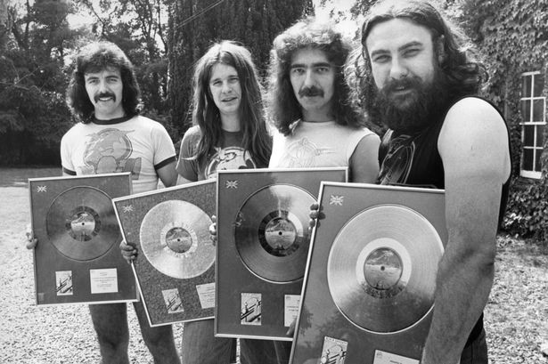

Black Sabbath
Trivia Game
Black Sabbath Trivia Game
Your Time Remaining (Doom Is Near!): 60 Seconds
1. Who is the woman on the cover of Black Sabbath's debut album?
Ann Kisington
Allison Smith
No one knows
Magaret McDonald
2. The song ‘Fairies Wear Boots’ was inspired by an encounter with?
Ghost
Skinheads
Shoe salesman
Cowboy
3. Tony Iommi was briefly engaged to wed?
Farrah Fawcett
Lita Ford
Ozzy Osborn
Lauren Hutton
4. What was the original band name of Black Sabbath?
Gravy
Birmingham Berries
Rat Salad
Earth
5. When did Black Sabbath form?
1970
1968
1969
1966
1967
6. After Ozzy left the band, who suggested a replacement?
Chris Squire
Jethro Tull
Sharon Osborne
John Kay
7. What year was Black Sabbath inducted into the Rock 'n' Roll Hall of Fame?
2011
2002
2006
2010
8. What track was NOT on the album Paranoid?
Rat Salad
Hand of Doom
Iron Man
N.I.B.
9. Who was the only member to constantly be in Black Sabbath?
Ozzy Osborne
Toni Iommi
Geezer Butler
Bill Ward
10. About how many records has the band sold worldwide?
150 million
50 million
100 million
25 million
Black Sabbath Trivia Game
All Done!
Correct Answers: 0
Incorrect Answers: 0
Unanswered: 0
